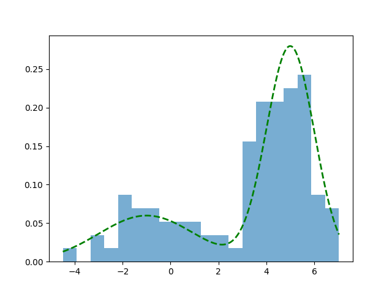
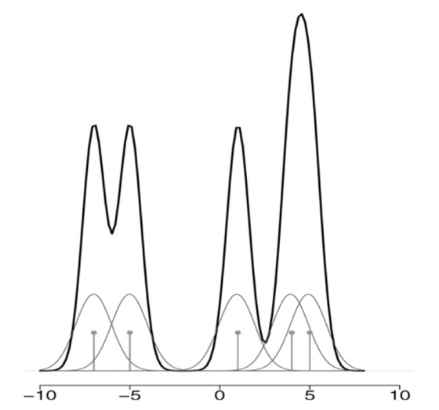
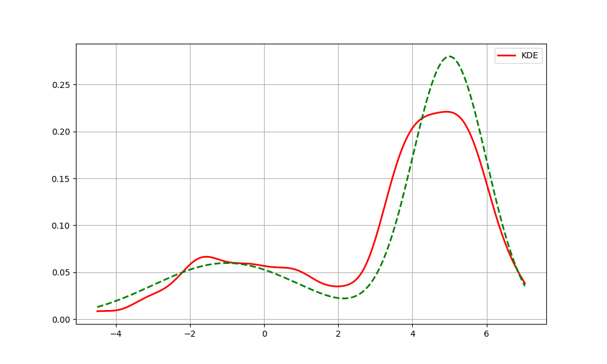
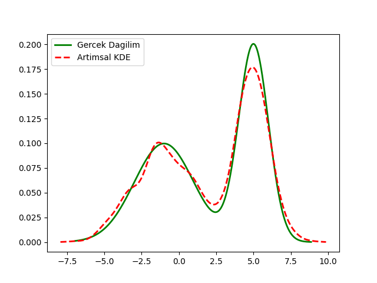
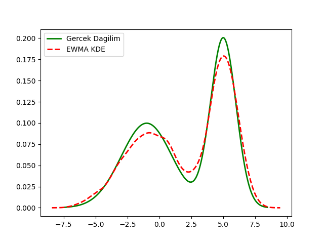

Parametrik istatistik açıklamaya çalıştığı bir örneklemin dağılımına ilişkin varsayımlar yapmaya uğraşır, mesela “bu veri bir Gaussian dağılımdan geliyordur” diyebilir, bilinmeyenler bu Gaussian dağılımının \(\mu\), ve \(\sigma\) değişkenleridir, parametreleridir. Bu değişkenler başta bilinmiyor olabilir fakat parametre olarak yaklaşımın bir parçasıdırlar. Parametrik olmayan istatistik ise varsayımlara dayanmaz; veriler belirli bir dağılımı takip etmeyen bir örneklemden toplanabilir, ya da dağılım varsa bile yaklaşım varsayım yapmayarak belki daha kuvvetli bazı sonuçlar almaya uğraşır.
Parametresiz İstatistik yaklaşımlarını pek çoğumuz belki de ait olduğu kategoriyi bilmeden sürekli kullanıyoruz. Bir histogram aldığımızda aslında parametresiz istatistik uygulamış oluyoruz, çünkü histogram yaklaşımı bilindiği gibi hiçbir dağılım varsayımı yapmıyor ve herhangi bir veri kümesiyle işleme kabiliyetine sahip. Verinin histogramını hesapladığımızda diyelim ki \(N\) tane kutucuk içine düşen verileri sayıyoruz, onların frekansını hesaplıyoruz ve bu frekans grafiklendiğinde bize verinin gerçek dağılımının ne olduğu hakkında bir fikir verebiliyor.
Bir örnek üzerinde görelim, altta iki değişkenli (bivariate) Gaussian dağılımından kendi ürettiğimiz rasgele verileri ve onun histogram temsilini gösteriyoruz.
from scipy import stats
def make_data_binormal(data_count=1000, seed=100):
np.random.seed(seed)
n1 = data_count // 2
n2 = data_count - n1
x = np.concatenate([
np.random.normal(-1, 2, n1),
np.random.normal(5, 1, n2)
])
def true_pdf(z):
return 0.5 * norm(-1, 2).pdf(z) + 0.5 * norm(5, 1).pdf(z)
# verileri karistir yoksa verinin ilk yarisinda sadece bir tur tepe
# gelecektir, bu durum azar azar (incremental) islem yaparken problem
# cikartabilir.
np.random.shuffle(x)
return x, true_pdf
data, d = make_data_binormal()
x_vals = np.linspace(np.min(data), np.max(data), 1000)
plt.hist(data, bins=20, density=True, alpha=0.6, label='Histogram')
plt.plot(x_vals, d(x_vals), color='green', lw=2, linestyle='--', label='True Distribution')
plt.savefig('stat_053_nonpar_01.png')
Histogram yaklaşımı gerçek dağılımın iki tepesini kabaca yakaladı, her iki tepe de grafikte görülebiliyor.
Histogram hesabının gerçek dağılımı temsil kabiliyetinin teorik ispatını [1, sf. 311]’de bulabiliriz.
Çekirdek Yoğunluk Tahmini (Kernel Density Estimation / KDE)
Histogram gibi parametresiz olan bir yaklaşım daha: KDE. Bu metotla diyelim ki bir olasılık yoğunluk fonksiyonu (pdf) \(f(x)\) tahmin edilmeye, yaklaşık olarak bir \(\hat{f}\) ile temsil edilmeye uğraşılıyor, bunu
\[ \hat{f}(x) = \frac{1}{n} \sum _{i=1}^{n} \frac{1}{h} K \left( \frac{x - x_i}{h} \right) \qquad{(1)} \]
hesabı ile gerçekleştirebiliriz. \(K\) ile gösterilen çekirdek fonksiyonlarıdır, farklı \(K\) seçimleri farklı sonuçlara sonuç verebilir, fakat genel olarak Gaussian dağılım fonksiyonları iyi sonuç verir. \(h\) değişkeni bant genişliği (bandwidth), bunu dışarıdan biz tanımlarız, tabii formülde \(1/h\) ekinin özel bir diğer önemi \(\hat{f}\)’nin entegre edilince 1 sonucunu vermesi [1, sf. 313].
\(K\) içeriğine gelelim, Gaussian dağılım formülünü hatırlarsak, standart sapma \(\sigma\) ortalama \(\mu\) olan bir dağılım,
\[ f_g(x) = \frac{1}{\sigma \sqrt{2\pi} } e^{-\frac{1}{2}\left(\frac{x-\mu}{\sigma}\right)^2} \]
Eğer \(\sigma=1,\mu=0\) dersek standart normal dağılım elde ederiz,
\[ f_g(x) = \frac{1}{\sqrt{2\pi} } e^{-x^2 / 2} \]
Bu formulu \(K\) icin kullanabiliriz,
\[ K(u) = \frac{1}{\sqrt{2\pi} } e^{-u^2 / 2} \]
KDE formülü
\[ \hat f(x) = \frac{1}{n h} \sum_{i=1}^n K\!\left(\frac{x - x_i}{h}\right) \]
O zaman
\[ \hat f(x) = \frac{1}{n h} \sum_{i=1}^n \frac{1}{\sqrt{2\pi}} \exp\!\left(-\frac{1}{2}\left(\frac{x - x_i}{h}\right)^2\right) \]
Burada ilginç bir nokta var, çok detaya girmek istemeyenler atlayabilir, fakat biraz cebirsel değişim sonrası farkediyoruz ki toplam içinde yeni bir Gaussan elde etmiş oluyoruz. Yani KDE tanımı itibariyle \(h\) bölümünün dikte edilmesi bizi şöyle bir Gaussian’a getiriyor, üstte toplam içini biraz açarsak ve dışarıdaki \(h\)’yi içeri getirirsek, toplam sembolü terimleri şu hale gelir,
\[ \frac{1}{h \sqrt{2\pi}} \exp\!\left(-\frac{(x-x_i)^2}{2 h^2}\right) \]
Üstteki formül sonuçta bir \(N(x_i, h^2)\) dağılımı degil midir? Ortalama \(x_i\) varyansı \(h^2\). Yani KDE mekanizması başlangıç \(N(0,1)\) çekirdeği üzerinden bizi dolaylı olarak her veri noktasında bir \(N(x_i, h^2)\) tepesi eklemeye götürmüş oluyor.
Kavramsal olarak tahmin edici \(\hat{f}\) her \(x\) noktasında \(x_i\) verisini merkez almış çekirdek fonksiyonlarının ortalamasıdır. Yani \(x_1\)’i merkez alan bir Gaussian vardır, tabii ki \(K(x)\) hesabı için \(x_1\)’deki çekirdeğe \(x_2,x_3,..\) üzerindeki Gaussian’ların değerleri de eklenir [2, sf. 313].

Kod ile bu hesabı görelim,
def kernel(type='gaussian'):
return lambda u: (1 / np.sqrt(2 * np.pi)) * np.exp(-0.5 * u**2)
def kde(data, k=None):
x = np.linspace(np.min(data), np.max(data), 1000)
k = kernel('gaussian')
n = len(data)
h = 0.5
diffs = (x[:, np.newaxis] - data) / h
kernel_values = k(diffs)
kde = np.sum(kernel_values, axis=1) / (n * h)
return kde
fhat_kde = kde(data)
plt.figure(figsize=(10, 6))
plt.plot(x_vals, fhat_kde, color='red', lw=2, label='KDE')
plt.plot(x_vals, d(x_vals), color='green', lw=2, linestyle='--')
plt.legend()
plt.grid(True)
plt.savefig('stat_053_nonpar_02.png')
Üstteki standart KDE kodlaması. Açıklamada tahmin edicinin “her \(x\) noktasında” yaptığı hesaptan bahsettik,
bu \(x\) noktası teorik muhakkak,
sayısal hesaplar için en az ve en çok \(x\) değerleri arasında belli noktaları
önceden np.linspace ile tanımlıyoruz, ve sadece bu noktalar
üzerinde Gaussian hesapları yapıyoruz. Bir nevi histogramsal bir
yaklaşım bu, ama kutucuklar yok, önceden seçilmiş \(x\) noktaları var.
Bir performans konusuna da dikkat çekelim. Formül (1)’deki \(K((x - x_i) / h)\) hesabının bir toplam içinde olduğuna ve her \(x\) hesabı için tüm diğer \(x\)’lerin üzerinden geçilmesi gerektiğine dikkat çekmek gerekiyor. Bu demektir ki üstte verilen yaklaşımın hesapsal karmaşıklığı \(O(n^2)\) olacaktır, ki bu hız anlık (online) işlem yapan uygulamalar için tercih edilen bir performans olmaz. KDE’yi daha hızlandırmak için bir yaklaşımı ileride göreceğiz.
KDE Olasılık Dağılımıdır
Çekirdek üzerinden tanımlanan fonksiyon bize bir yaklaşıksal olasılıksal yoğunluk fonksiyonu (pdf) veriyor mu? Bunun ispatı için \(K\) seçimindeki bazı şartları tam belirleyelim. KDE matematiğine göre çekirdek pürüzsüz bir fonksiyon olmalıdır, öyle ki \(K(x) \ge 0\), \(\int K(x) \,dx = 1\), \(\int x K(x) \,dx = 0\), ve \(\int x^2 K(x) \,dx > 0\).
Bir fonksiyonun pdf olması için iki şart var, \(\hat{f}(x) \ge 0\) olmalı, ve \(\int \hat{f}(x) \,dx = 1\) olmalı. Dikkat edersek bu iki şart \(K\) için tanımlanan şartlarla aynı. Bunun KDE formülü üzerinden yansıması şöyle olur,
\[ \int_{-\infty}^{\infty} \hat{f}(x) \,dx = \int_{-\infty}^{\infty} \frac{1}{n} \sum_{i=1}^n K(x-x_i) \,dx \]
Eşitliğin sağındaki sabit \(1/n\) entegral dışına çıkartılabilir,
\[= \frac{1}{n} \sum_{i=1}^n \int_{-\infty}^{\infty} K(x-x_i) \,dx\]
Bir değişken değişimi yapalım, \(u = \frac{x-x_i}{h}\) olsun, o zaman \(x = uh + x_i\), ve \(dx = h\,du\). Entegral limitleri aynı kalıyor, demek ki
\[= \frac{1}{n} \sum_{i=1}^n \int_{-\infty}^{\infty} \frac{1}{h}K(u) (h\,du)\]
Bölüm ve bölendeki \(h\) terimleri iptal olur,
\[= \frac{1}{n} \sum_{i=1}^n \int_{-\infty}^{\infty} K(u) \,du\]
Çekirdek fonksiyonu tanımına göre \(K(u)\)’nun tüm tanım alanı üzerinden entegrali 1 olmak zorundaydı, \(\int_{-\infty}^{\infty} K(u) \,du = 1\). O zaman,
\[= \frac{1}{n} \sum_{i=1}^n (1) = \frac{1}{n} (n) = 1\]
Görüldüğü gibi çekirdek yoğunluk tahminsel hesap hem negatif olmama hem de normalizasyon (entegralin 1 olması) şartlarını yerine getiriyor, o zaman tanım itibariyle o bir pdf’tır.
KDE Ana Yoğunluğa Ne Kadar Yakındır?
KDE ile elde edilen fonksiyonun bir pdf olması yeterli değil, önemli olan tahmin edilmeye uğraşılan ana pdf’e ne kadar yaklaştığı.
Her \(x\) noktasında KDE’nin ortalama ve varyansına bakalım. Once ortalama,
\[ E[\hat{f}(x) ] = \frac{1}{n} \sum _{i=1}^{n} E \left[ \frac{1}{h} K \left( \frac{x - x_i}{h} \right) \right] \]
\[ = \int K(u) \left[ f(x) - h u f'(x) + \frac{h^2 u^2 }{2} f''(x) + o(h^2) \right] \,du \]
\[ = f(x) \int K(u)\,du \;-\; h f'(x)\int u K(u)\,du \;+\; \frac{h^2 f''(x)}{2}\int u^2 K(u)\,du \;+\; \int K(u)\,o(h^2)\,du. \]
\(K\) tanımına göre \(\int K(x) \,dx = 1\), \(\int x K(x) \,dx = 0\) olması gerektiğini hatırlarsak,
\[ = f(x) + \frac{h^2 f''(x)}{2} \int K(u) u^2 \,du + o(h^2) \]
Eğer \(\int K(u) u^2 \,du = \sigma_K^2\) dersek, ve \(f(x)\) ifadesini eşitliğin soluna taşırsak,
\[ E[\hat{f}(x)] - f(x) = \frac{h^2 \sigma_K^2 f''(x)}{2} + o(h^2) \qquad{(3)} \]
Eşitliğin solundaki terim yanlılık (bias) hesabıdır. Doğal olarak yanlılığın azalmasını isteriz, üstteki ifade diyor ki \(h\) küçüldükçe yanlılık ta sıfıra gidecek. Demek ki \(h\) değerini küçültürsem yanlılığı azaltırım.
Fakat yanlılık tek başına yeterli değil, genellikle aranan bir hata kare ortalaması (mean square error), MSE olarak bilinen hesabın ufalmasıdır.. MSE hesabı da yanlılık karesi artı varyanstır, burada istatistik literatüründe bilinen yanlılık / varyans dengesi (tradeoff) aklımıza gelebilir, yanlılığı azalttığımızda varyansta patlamaya sebep olabiliriz, bu sebeple her iki ölçümü dengeleyen bir yaklaşım bulunmalıdır. O zaman nihai bir optimal sonuca ulaşmak için KDE’nin varyansını hesaplayalım.
\[ Var \left[ \hat{f}(x) \right] = \frac{1}{n} Var \left[ \frac{1}{h} K \left( \frac{x - X}{h} \right) \right] \]
Temel İstatistiği hatırlarsak \(Var(X) = E(X^2) - E(X)^2\), o zaman üstteki
\[ = \frac{1}{n} \left[ E \left[ \frac{1}{h^2} K^2 \left( \frac{x - X}{h} \right) \right] \right] - \left( E \left[ \frac{1}{h} K \left( \frac{x - X}{h} \right) \right] \right)^2 \]
olacaktır. İlk beklenti (expectation) hesabını standart beklenti formülü ile açabiliriz, bu bir entegraldir, \(X\) pdf fonksiyonu \(f_X\) için bunun \(\int x f_X \,dx\) olduğunu biliyoruz, bunu uygularız. İkinci beklenti için daha önce bulduğumuz (3)’teki formülü kullanırız,
\[ E[\hat{f}(x)] = \frac{h^2 \sigma_K^2 f''(x)}{2} + f(x) + o(h^2) \]
Buradaki ilk terimi \(o(h^2)\)’ye dahil edebiliriz, o zaman iki üstteki,
\[ = \frac{1}{n} \left[ \int K^2 \left( \frac{x - t}{h} \right) \,dt - [ f(x) + O(h^2)]^2 \right] \]
olur. Eksiden sonraki kare alma işlemini açalım,
\[ [ f(x) + O(h^2)]^2 = f(x)^2 + 2f(x) O(h^2) + (O(h^2))^2 = \]
\(f(x)\), O(h^2)’e kıyasla sabit sayılır, etkisi yoktur, \((O(h^2))^2 = O(h^4)\),
\[ = f(x)^2 + O(h^2) + O(h^4) \]
elde ederiz. Büyük O notasyonu matematiğine göre iki farklı dereceyi topladığımız zaman daha yavaş azalan / sönümlenen (decay) terim tutulur, o zaman \(O(h^4)\) atılır, geriye \(f(x)^2 + O(h^2)\) kalır.
\[ = \frac{1}{n} \left[ \int K^2 \left( \frac{x - t}{h} \right) \,dt - f(x) + O(h^2)] \right] \]
Not: Büyük O notasyonunda \(-O(h^2) = O(h^2)\), negatif işaret farketmiyor.
Değişken değişimi yapıyoruz
\[ \frac{1}{n} \left[ \int \frac{1}{h} K^2(u) f(x - hu) \,du - f(x)^2 + O(h^2) \right] \]
Taylor açılımını tekrar uyguluyoruz,
\[ \frac{1}{n} \left[ \int \frac{1}{h} K^2(u) \big( f(x) - huf'(x) \big) \,du - f(x)^2 + O(h^2) \right] \qquad{(2)} \]
Şimdi entegrali açalım, sonuç şöyle olur,
\[ = \frac{f(x)}{hn} \int K^2(u) \,du - f'(x) \int u K^2(u) \,du - ... \]
Ilk terimde \(\int K^2(u) \,du\) var, bu bir sabite esittir.
\[ K(u)^2 = \left( \frac{1}{\sqrt{2\pi}} e^{-u^2/2} \right)^2 = \frac{1}{2\pi} e^{-u^2}. \]
\[ \int_{-\infty}^{\infty} K(u)^2 \, du = \frac{1}{2\pi} \int_{-\infty}^{\infty} e^{-u^2} \, du. \]
Eşitliğin sağındaki entegralin \(\sqrt{\pi}\) olduğu biliniyor, o zaman
\[ \Rightarrow \frac{1}{2\pi} \cdot \sqrt{\pi} \Rightarrow \int_{-\infty}^{\infty} K(u)^2 \, du = \frac{1}{2\sqrt{\pi}} = R(K) \]
Üstteki sonuç literatürde \(R(K)\) ile anılır.
İkinci terimde \(\int u K^2(u) du\) var, bu sıfırdır, \(K(u)\) bir çift fonksiyon (tek fonksiyon, çift fonksiyon kavramlarını hatırlarsak, \(K(u)=K(-u)\)), ve \(K^2(u)\) yine çift, fakat \(u K^2(u)\) tek çünkü \(u\) değişkeni, bir fonksiyon olarak düşünülürse tektir. Ve tek fonksiyonların sıfır etrafındaki simetrik limitleri üzerinden entegrali sıfırdır.
Formül (2)’den geriye kalanlar
\[ = \frac{1}{n} \left[ \frac{f(x)}{h}R(K) - f(x)^2 + O(h^2) \right] \]
Şimdi O notasyonu bağlamında düşünürsek, ilk terimde \(f(x)R(K) / nh\) var, burada \(R(K)\) seçilen çekirdek \(K\)’ye bağlı bir sabittir, o zaman O notasyon sonucunda \(O(1/nh)\) elde ederiz. İkinci terimde \(f(x)^2/n\) var, burası \(O(1/n)\) oluyor, çünkü \(n\) ve \(h\) büyümesine göre \(f(x)^2\) sabit sayılır. Üçüncü terimde \(O(h^2)/n\) var, bu da \(O(h^2/n)\) oluyor. Hepsinin nihai toplamı \(O(1/nh)\) olurdu. Ama birinci terimi tutalım ve şunu gösterelim,
\[ Var \left[ \hat{f}(x) \right] = \frac{f(x)R(K)}{nh} + O(1/n) \]
\(n \to \infty\) iken ve \(nh \to \infty\) ise üstteki sıfıra gider. O zaman yanlılık ve varyans dengesi bağlamında suna dikkat edersek yöntem işler; \(h\) sıfıra gitmelidir, ama bunu \(1/n\)’den daha yavaş yapmalıdır [1, sf. 314].
Alttaki formülde daha açık görebiliriz, hataların kare ortalaması (mean square error, MSE) hesabı yanlılık karesi artı varyanstır, o zaman
\[ MSE = \frac{h^4 \sigma_K^4 (f''(x))^2}{4} + \frac{f(x)}{hn} \int K^2 (u) \,du + \textrm{ufak degerler} \]
Doğru seçilmiş \(h,n\) değerleri büyürken MSE’yi minimal hale getirebilir, ama tabii ki bölünende olan \(h\) değerine dikkat edersek. Bu iki değer, \(h,n\) arasındaki denge için ek hesabı [1, sf. 315]’te bulabiliriz, optimal oran \(h_{opt} = O(n^{-1/5})\) olarak gösterilmiş, yani en iyi bant genişliği \(h\) değeri veri noktası sayısının 1 bölü beşinci kuvvetine oranla sıfıra gitmelidir. Not: Üstteki formül her \(x\) bazındadır, [1] kaynağında optimal \(h\) bulmak için tüm \(x\)’ler üzerinden entegral alınarak \(h\) üzerinden türev alınmıştır, bir “hata karelerinin entegresi alınmış beklentisi” hesaplanmıştır.
Artımsal KDE
KDE formülünü kullanarak \(p_n(x)\) tanımlayalım,
\[ p_n(x) = \frac{1}{n}\sum_{i=1}^{n} K_h(x - x_i). \]
\((n+1)\)’inci veri gelince \(n+1\) veri noktası içeren KDE şudur,
\[ p_{n+1}(x) =\frac{1}{n+1}\sum_{i=1}^{n+1} K_h(x - x_i) =\frac{1}{n+1}\Big(\sum_{i=1}^{n} K_h(x - x_i) + K_h(x - x_{n+1})\Big). \]
Eşitliğin sağındaki ilk terimde \(\sum_{i=1}^{n} K_h(x - x_i)\) ifadesi yerine bir önceki tanımdan \(n p_n(x)\) formüle sokulabilir, bu bize \(p_{n+1}(x)\) için özyineli bir güncelleme formülü verir,
\[ p_{n+1}(x) = \frac{n}{n+1}\,p_n(x) + \frac{1}{n+1}\,K_h(x - x_{n+1}) \qquad{(1)} \]
Kodları görelim,
from scipy.stats import norm
num_points = len(data)
total_density = None
N = 0
h = 0.5
x_values = np.linspace(min(data) - 1, max(data) + 1, num_points)
current = data[0]
total_density = norm.pdf(x_values, loc=current, scale=h)
for i in range(len(data)):
current = data[i]
density = norm.pdf(x_values, loc=current, scale=h)
total_density = (N/(N+1)) * total_density + (1 / (N+1)) * density
N += 1
x_vals = np.linspace(np.min(data), np.max(data), 1000)
plt.plot(x_vals, d(x_vals), color='green', lw=2, linestyle='-', label='Gercek Dagilim')
plt.plot(x_values, total_density, color='red', lw=2, linestyle='--', label='Artimsal KDE')
plt.legend()
plt.savefig('stat_053_nonpar_03.png')
EWMA Bağlantısı
Önce [6] yazısında gördüğümüz basit sayılar üzerinde artımsal (incremental) ortalama hesabı formülünü hatırlayalım,
\[ \bar{x}_n = \left(1 - \tfrac{1}{n}\right)\bar{x}_{n-1} + \tfrac{1}{n} x_n. \]
Ya da
\[ \bar{x}_n = \frac{n-1}{n} \bar{x}_{n-1} + \tfrac{1}{n} x_n. \]
Şimdi KDE, sayaç güncellemesinin nerede olduğuna bağlı olarak ve bir indis kaydırması yaparak KDE özyineli formül (1) şu şekilde de gösterilebilir,
\[ p_{n}(x) = \frac{n-1}{n}\,p_{n-1}(x) + \frac{1}{n}\,K_h(x - x_{n}) \]
Her iki form birbirinin aynısı. Tek fark güncelleme için kullanılan “yeni veri” noktasının birinde reel sayı olması diğerinde ise \(K_h(x - x_{n})\) ile hesaplanan son noktanın olasılık değeri.
Bu form benzerliğini saptamak önemli çünkü şimdi, aynen [5]’de gösterildiği gibi, ortalama güncellemesini üstel ağırlıklı EWMA forma geçirebildiğimiz gibi üstteki KDE güncellemesini de EWMA formatına geçirebiliriz. Yani, en son veriye daha ağırlık veren EWMA formundaki KDE şu şekilde yazılabilir.
\[ p_n(x) = (1-\alpha)\,p_{n-1}(x) + \alpha\,K_h(x - x_n). \]
Bu noktada EWMA’nın bir tür “kayan pencere ortalaması” olduğunu hatırlayabiliriz, kabaca bu pencere büyüklüğünün \(\alpha\) bazlı nasıl saptanabildiğini [3]’te görmüştük. Yani ortalama güncellemesinden kayan pencere ortalamasına, oradan tek parametre kullanarak hızlı şekilde pencere ortalaması EWMA ile yapmaya doğru bir geçiş mümkündür. Bu geçiş performans, kodlama açısından faydalı olabilir, çünkü çok uzun süreli güncelleme alan bir sistem düşünelim, veri nokta sayısı \(n\) çok büyüyecektir, bu sayı bölüm sırasında problem çıkartabilir. Fakat EWMA yaklaşımı sabit tek parametre üzerinden işlediği için bu tür problemleri olmaz.
from scipy.stats import norm
num_points = len(data)
h = 0.5
alpha = 0.001
x_values = np.linspace(min(data) - 1, max(data) + 1, num_points)
current = data[0]
total_density = norm.pdf(x_values, loc=current, scale=h)
for i in range(len(data)):
current = data[i]
density = norm.pdf(x_values, loc=current, scale=h)
total_density = (1-alpha)*total_density + (alpha)*density
data, d = make_data_binormal(data_count=10*1000)
x_vals = np.linspace(np.min(data), np.max(data), 1000)
plt.plot(x_vals, d(x_vals), color='green', lw=2, linestyle='-', label='Gercek Dagilim')
plt.plot(x_values, total_density, color='red', lw=2, linestyle='--', label='EWMA KDE')
plt.legend()
plt.savefig('stat_053_nonpar_04.png')
Üstteki metotun ne kadar verimli çalıştığını ne kadar anlatsak az
gelir. Örnek amaçlı olarak data içindeki veriyi yarattık ve
onun üzerinden geçiyoruz fakat dikkatlice bakarsak kodun aslında elde
hiçbir veri tutmasına ihtiyacı yok. Onun tek hatırlaması gereken
total_density, x_values icindeki \(x\) değer listesi (bunlar bir kere
ayarlandıktan sonra bir daha değişmiyor), ve tek bir alpha
sabiti. Bu kadar. Yeni veri bize dış sistemden teker teker veriliyor
olabilirdi, biz yine üstteki aynı güncelleme mantığını kullanırdık, ve
bu mantık her yeni veri için x_values kadar nokta üzerinden
geçerdi, orada bir Gaussian hesabı yapardı ve özyineli güncellemesini
tek bir satırda gerçekleştirdi. Bu sayede, bu hızlı güncelleme ile,
verinin dağılımı ne olursa olsun, onun esas dağılımı hakkında hiçbir şey
bilmeden bu dağılımı yaklaşık şekilde temsil edebilmiş oluyoruz.
Kaynaklar
[1] Shalizi, Advanced Data Analysis From An Elementary Point of View
[2] Wasserman, All of Statistics
[3] Bayramli, Zaman Serileri - ARIMA, ARCH, GARCH, Periyotlar, Yürüyen Ortalama
[4] Bayramli, Istatistik, Parametresiz İstatistik (Nonparametric Statistics)
[5] Bayramli, Zaman Serileri, ARIMA, ARCH, GARCH, Periyotlar, Yürüyen Ortalama
[6] Bayramli, Azar Azar İstatistik (Incremental Statistics)